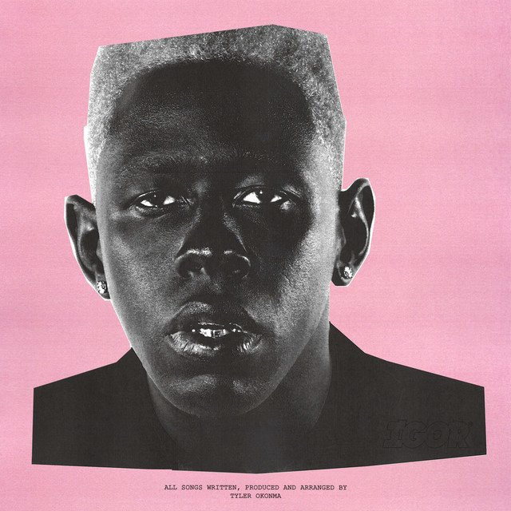
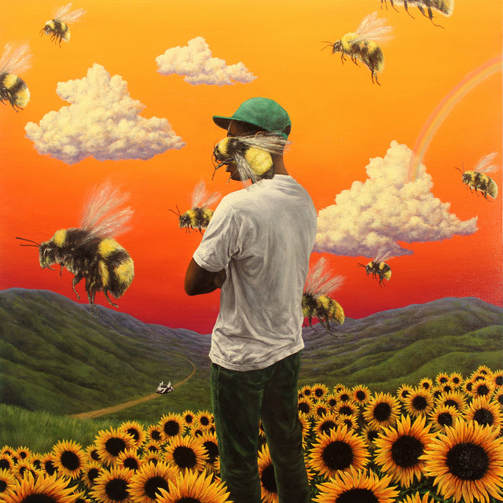
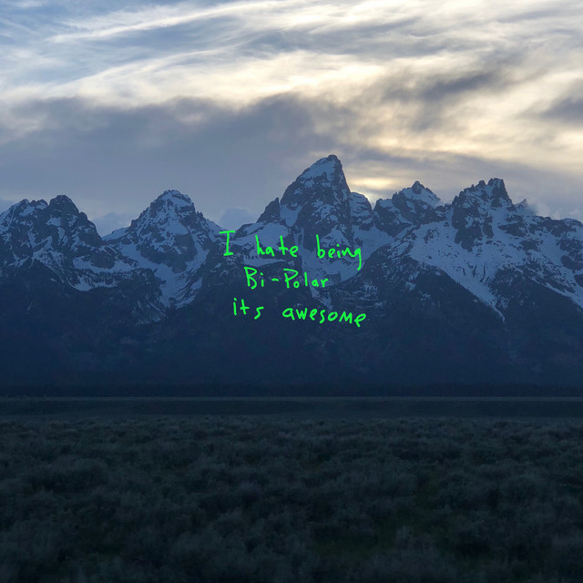

| Álbum | Artista | Duración | Fecha de salida (Y/M/D) | Nota (sobre 10) | Fecha de review (Y/M/D) | Imágen |
|---|---|---|---|---|---|---|
| IGOR | Tyler, The Creator | 40 min | 2019/5/17 | 8,5 | 2022/9/27 |  |
| Flower Boy | Tyler, The Creator | 46 min | 2017/7/21 | 8 | 2022/9/27 |  |
| ye | Kanye West | 24 min | 2018/6/1 | 3 | 2022/9/27 |  |